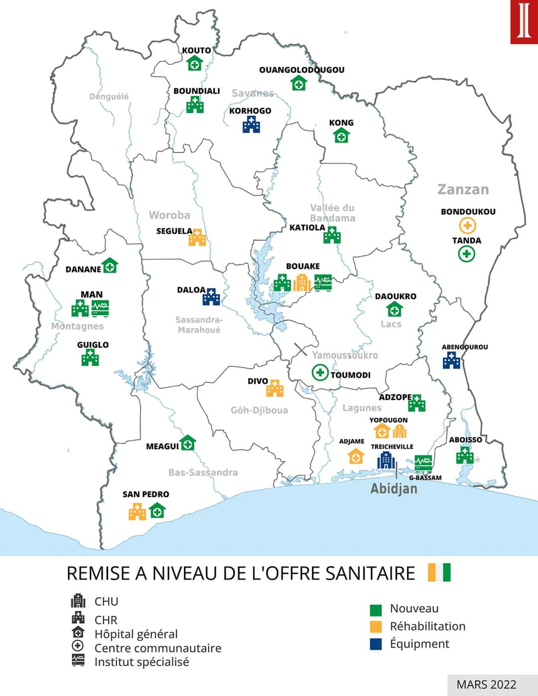

Densité Médiale Réginale
Radio Médecin/Patient par District Sanitaire
Optimal
Critique

Chiffre Clé
67%
De la population rurale se trouve à
plus de 5km d’un centre de sané
primaire (ESPC).
ZONES PRIORITAIRES
01
Nord & Frontiéres
Déficit majeur en personnel spécialié
02
Oest Montagneux
Accessibilité géographique limitée